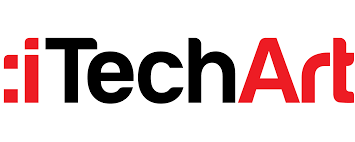
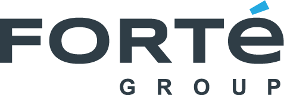

Empresas internacionaes
es una empresa de desarrollo web3 con más de 13 años de experiencia en diferentes industrias basadas en web3 y blockchain. Diseña soluciones completas de 360° para varias nuevas empresas y empresas con tecnología web3 ultramoderna y herramientas potentes. Suffescom Solutions se ocupa del desarrollo de plataformas basadas en web3, desarrollo de juegos, desarrollo de NFT, desarrollo de plataformas de redes sociales, desarrollo de plataformas inmobiliarias, desarrollo de configuración de oficinas corporativas basadas en web3, desarrollo de tiendas basadas en web3, servicios de integración, servicios de marketing para web3, desarrollo de tiendas, desarrollo de plataformas educativas, desarrollo de plataformas de eventos y desarrollo de dApp.
es una empresa de desarrollo web3 con amplia experiencia en desarrollo 3D, AR, VR, AI e IoT. Cuenta con más de 150 profesionales hábiles para diseñar plataformas futuristas para las industrias de juegos, comercio electrónico, comercio minorista, bienes raíces y atención médica. RisignMax tiene experiencia en tres cadenas de bloques específicas: Cardano, Ethereum y Stellar y también ofrece servicios de consultoría web3 y mapeo web. Proporciona soluciones de metaverso para varios casos de uso, ya sea deportes, moda, arte, atención médica, cine o el negocio de la tecnología. Sus servicios de metaverso utilizan la integración de blockchain, el cifrado de datos, la protección entre sitios y los servicios escalables para proporcionar a las empresas soluciones de metaverso únicas y sólidas.

Con más de 15 años de experiencia en desarrollo de software personalizado, iTechArt proporciona a las corporaciones y nuevas empresas los productos y servicios necesarios para su expansión comercial, incluido el desarrollo web3, móvil y basado en la nube. Con más de 3000 ingenieros profesionales competentes en la producción de soluciones para diversos sectores, también son maestros en innovación de blockchain y AR/VR. iTechArt adopta un enfoque integral para el desarrollo de AR/VR y proporciona aplicaciones ampliadas, inmersivas y completas que brindan a los usuarios una experiencia muy atractiva e intuitiva. La creación personalizada de AR, las experiencias de realidad mixta, el potente software de realidad virtual, la película de 360 grados y la representación en 3D se encuentran entre sus ofertas de metaverso.
Es una empresa de desarrollo de software establecida que beneficia a una amplia gama de negocios verticales de la industria. La compañía ofrece un conjunto completo de servicios, que incluyen Blockchain, Inteligencia Artificial y Realidad Aumentada, lo que permite a las empresas superar los límites. Además, LeewayHertz tiene una amplia experiencia que les permite ofrecer las soluciones más innovadoras y completas. Como empresa de desarrollo Web 3 de primer nivel, LeewayHertz fomenta una amplia gama de servicios Web 3, incluido el desarrollo de dApp, el desarrollo de DeFi, el desarrollo de juegos Web 3 y el desarrollo de contratos inteligentes. Leewayhertz empodera a las empresas con productos como billetera criptográfica, explorador de cadenas de bloques, estadísticas de red, intercambio criptográfico, IDE, monitor de contratos inteligentes y DAO.
Como socio de entrega de software, Forte Group siempre está listo para llevar al negocio a través de cada paso para hacer realidad la visión de su producto. Ya sea que construya desde cero, evolucione la práctica de entrega o amplíe su equipo, sus 22 años de expertos en entrega de software pueden ayudarlo a superar los obstáculos digitales y acelerar y desarrollar a través de un software transformador. Trabajan con departamentos de ingeniería de software, líderes comerciales y empresas de tecnología para lograr resultados comerciales valiosos de manera consistente.
